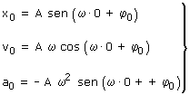
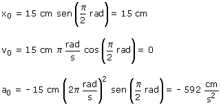
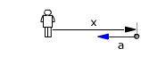

a)
Ecuaciones del movimiento:
|
|
Parámetros: A = 15 cm, ω = 2π rad/s (T = 2π/ω= 1 s) φ0 = π/2 rd |

Aplicación: (Situación inicial)
Datos: t = 0, Incógnitas: x0, v0, a0

|  |
 |
Inicialmente el móvil está quieto en el extremo derecho de la trayectoria y tiene aceleración hacia la izquierda lo que significa que en el siguiente instante estará moviéndose hacia la izquierda